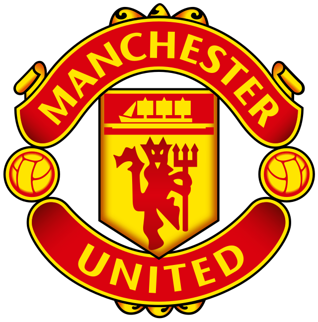

Manchester United

Over the course of 67 years, there have been 200 continental clashes at the Theatre of Dreams, and countless opportunities to fall in love and be mesmerised by football's
biggest and most glamorous names - the likes of Barcelona, Bayern Munich and Real Madrid have been regular visitors, as have Italy’s successful triumvirate of AC Milan, Internazionale and Juventus.
At the other end of the spectrum, M16 has played host to clubs from relative outposts, teams who may have had a season or two in the spotlight before disappearing from the conversation.
As you'll see, the initial taste of Euro action can be fairly varied in terms of stardust and stature, but there's one thing our writers' selections demonstrate more than anything else:
once you've had your introduction to those floodlit nights at Old Trafford, you're never going back.